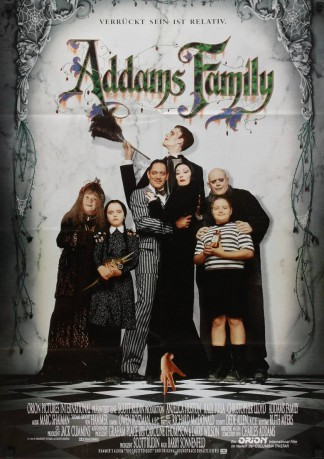
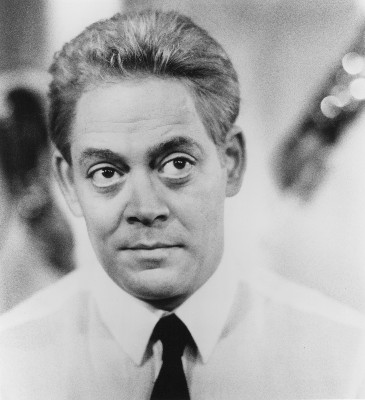
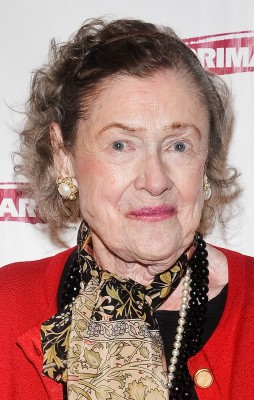

#4907 Die Addams Family
Alternativ: The Addams Family
Auszeichnungen: für 1 Oscars nominiert
 
 IMDB-Wertung: 6.8 / 10
IMDB-Wertung: 6.8 / 10  Metascore: 0
Metascore: 0 
Die Kinderchen spielen vegnügt mit Fallbeil, elektrischem Stuhl und Armbrust. Mama Morticia läßt sich zur Feier des Tages ein wenig foltern. Und Papa Gomez macht gerade den Anwalt fertig. Dazwischen krabbelt, wie immer auf flinken Fingern, das Eiskalte Händchen durch die Villa. Normaler, schwarzer Addams-Alltag. Doch nun will sich ein Gauner das Familienvermögen unter den Nagel reißen. Die Addams werden böse wie nie zuvor...
Jahr: 1991
Dauer: 99 Minuten
FSK: 12
Land: USA Studio: Paramount PicturesTonspuren: DTS - ,
Untertitel: Deutsch,
Auflösung: 1080p (1920x1032) Größe: 6113 MB
Genre: Komödie, Fantasy
Regisseur:  Barry Sonnenfeld
Barry Sonnenfeld
Drehbuch: Steven Baigelman
Soundtrack:
Darsteller:
 Anjelica Huston als Morticia Addams
Anjelica Huston als Morticia Addams-  Raul Julia als Gomez Addams
 Christopher Lloyd als Uncle Fester Addams / Gordon Craven
Christopher Lloyd als Uncle Fester Addams / Gordon Craven Dan Hedaya als Tully Alford
Dan Hedaya als Tully Alford-  Elizabeth Wilson als Abigail Craven / Dr. Greta Pinder-Schloss
 Judith Malina als Granny
Judith Malina als Granny- Carel Struycken als Lurch
 Dana Ivey als Margaret Alford
Dana Ivey als Margaret Alford Paul Benedict als Judge Womack
Paul Benedict als Judge Womack Christina Ricci als Wednesday Addams
Christina Ricci als Wednesday Addams- Jimmy Workman als Pugsley Addams
- Christopher Hart als Thing
- John Franklin als Cousin It
- Ryan Holihan als Lumpy Addams
- Darlene Levin als Fauna Amor
 Kate McGregor-Stewart als Employment Agent
Kate McGregor-Stewart als Employment Agent Whit Hertford als Little Tully
Whit Hertford als Little Tully- Mercedes McNab als Girl Scout
- Joe Zimmerman als Long Arm Addams
- Eugene Jackson als One-Armed Bass Player
- Richard Tanner als Snake Charmer
- Marc Shaiman als Conductor
- Sally Jessy Raphael als Herself
 Bruce Holman als Office Worker , uncredited
Bruce Holman als Office Worker , uncredited Barry Sonnenfeld als Passenger on Gomez's train , uncredited
Barry Sonnenfeld als Passenger on Gomez's train , uncredited- Benny Wills als Elf , uncredited
- Tony Azito als Digit Addams
- Douglas Brian Martin als Dexter Addams
- Steven M. Martin als Donald Addams
- Allegra Kent als Cousin Ophelia Addams
- Richard Korthaze als Slosh Addams
- Maureen Sue Levin als Flora Amor
- Lela Ivey als Susan Firkins
- Patty Maloney als Lois Addams
- Victoria Hall als Swedish Blonde
- Jimmy Ross als Pre-Teen Gomez
- Ryan Anderson als Pre-Teen Fester
- Daniel Pikus als Teenage Gomez
- Michael Hittesdorf als Teenage Fester
- Lauren Walker als Teenage Flora
- Valeri Walker als Teenage Fauna
- Steve Welles als Fingers Addams
- Jonathan Wee als Juggler
- Owen Morse als Juggler
- Diane Burt als Caroler
Datei: X:\2-Dilogie(A-F)\Addams Family\Addams Family, Die (1991, FSK12, 1920x1032).mkv seit 30.11.2016
Festplatte: HD Collection-2(A-Z)-3(A-M)
 Alle Filme aus Gruppe '2-Dilogie(A-F)\Addams Family'
Alle Filme aus Gruppe '2-Dilogie(A-F)\Addams Family'